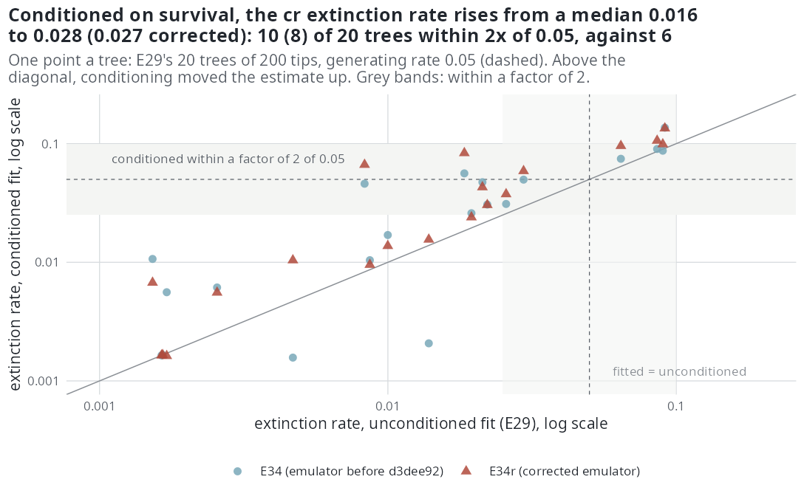

E34 — is the zero extinction of E29 and E32 an artefact of the unconditional likelihood?
| Status | complete; (a) and E34r hold; (b) is historical: it ran with the survival emulator before d3dee92, and E34r, under the corrected emulator, replaces it with the same verdict |
| Package build | (b) emphasis f30a791; E34r emphasis d3dee92 |
| Driver / analysis | sim/E34-conditioned.R; sim/E34-analysis.R; sim/E34r-analysis.R |
| Data | results/E34-exact-cond0.csv (40 rows), results/E34/{cells,pairs,conditioned}.csv, results/E34r/{cells,pairs,conditioned}.csv; macros report/e34-numbers.tex, report/e34r-numbers.tex; tables report/e34-table.tex, report/e34r-table.tex |
Question
Every fit up to E33 maximised the unconditional likelihood \(f(y\mid\theta)\), on trees that were kept only if both crown lineages reached the present (recorded 2026-10-09, before E34). Dividing by \(P(S\mid\theta)\), which falls as extinction rises, moves the extinction estimate up, so the unconditional estimate is biased toward zero relative to the conditional one. E29 and E32 put the extinction side on the lower limits of the box. E34 asks whether conditioning on survival is what was missing.
Design
(a) The exact estimators, conditioned and not. DDD::bd_ML and DDD::dd_ML with cond = 0 on the same 40 trees as E32 (c) (E29's 20 ned trees and E27's 20 null trees at 200 tips), beside E32 (c)'s cond = 1. Descriptive.
(b) MCEM conditioned on survival. estimate_rates(cond = <survival GAM>), which maximises \(\ell(\theta) - \log\hat P_{\text{tree}}(\theta)\), the GAM trained by auto_bounds() on 500 points of the rung's box with one simulated clade each.
| setting | value |
|---|---|
| trees | E29's 20 ned trees; E27's 20 null (dd) trees, 200 tips, turnover 0.10, \(\mu\) = 0.05, \(\rho\) = 1 |
| ladder | cr → dd → ned on ned trees; cr → dd on null trees; each rung started from the previous conditional estimate |
| budget | 300 draws, max_iter 300, 16-hour clock |
| unconditional partners | E29's fits (ned trees); E27's 200-tip fits at 100 iterations and a two-hour clock (null trees), paired by tree |
| recorded per fit | estimate, conditional log-likelihood, GAM survival probability at the conditional and unconditional estimates, effective sample, stop reason, box |
Pre-set rule
On the ned fit of the ned trees:
- rate at the origin within a factor of 2 of 0.05 on at least half the trees → "restored by conditioning";
- slope on ED within 0.1 per unit of zero on at least half → "restored";
- the share with an extinction parameter on a limit, beside E29's 17 of 20;
- the speciation coefficient stays at a median 0.75 to 1.25 of its value;
- a fit whose GAM predicts survival below 0.01 at its estimate is outside the GAM's support and left out of (1) to (3).
If (1) and (2) both hold, E29 and E32 are re-read as a bias of the unconditional likelihood; if neither, "conditioning is not the cause".
Results
(a) Exact estimators (median \(\mu\); within 2x of 0.05; below 0.005):
| estimator, trees | cond = 0 |
cond = 1 (E32 c) |
|---|---|---|
bd_ML, ned trees |
0.0000; 0; 19 | 0.0000; 3; 17 |
bd_ML, null trees |
0.0000; 0; 20 | 0.0000; 0; 20 |
dd_ML, ned trees |
0.0304; 3; 9 | 0.1575; 4; 1 |
dd_ML, null trees |
0.1145; 4; 5 | 0.1220; 4; 1 |
Conditioning moves bd_ML from zero on 39 of 40 trees to zero on 37, and moves dd_ML up; it does not bring either to the generating rate on more than 4 of 20 trees.
(b) MCEM conditioned (results/E34/cells.csv; unconditioned partner in parentheses; "in" = within 2x of 0.05 for a rate, within 0.1 of zero for a slope). The rate at present diversity is \(\mu_0 e^{\gamma_N n}\), without an ED term (E29's version had one).
| trees, fit | outside support | finished | ESS | rate at origin | in | rate at present N | in | slope on ED | in | on a limit | \(\hat P\) surv | \(\beta_{ED}\) ratio |
|---|---|---|---|---|---|---|---|---|---|---|---|---|
ned, cr |
0 | 20 | 300 | 0.0283 (0.0161) | 10 (6) | same | 10 (6) | — | — | 3 | 0.80 (0.87) | — |
ned, dd |
1 | 20 | 264 | 0.0075 (0.0040) | 2 (1) | 0.0382 (0.0422) | 4 (6) | — | — | 4 | 0.81 (0.91) | — |
ned, ned |
0 | 6 | 75 | 0.0023 (0.0019) | 1 (0) | 0.0007 (0.0017) | 2 (3) | +0.265 (-0.400) | 4 (2) | 14 | 0.49 (0.96) | 0.80 (0.71) |
null, cr |
0 | 20 | 300 | 0.0016 (0.0016) | 3 (1) | same | 3 (1) | — | — | 11 | 0.92 | — |
null, dd |
1 | 19 | 283 | 0.0032 (0.0018) | 1 (0) | 0.0058 (0.0060) | 5 (3) | — | — | 11 | 0.86 | — |
Per tree (pairs.csv): the ned fit's slope on ED is on the lower limit on 2 trees and the upper on 6; 6 fits converged and 14 ran to 300 iterations; GAM survival at the conditioned ned estimate has quartiles 0.37 / 0.49 / 0.74, none below 0.01. The conditioned cr rate is above the unconditioned on 15 of 20 trees. Cost at 200 tips: survival GAM 45 minutes a rung for ned, conditioned ned fit 86 minutes (medians).

The estimates of every estimator, conditioned and not, side by side are in the second figure of E32.
Verdict. Rule (1): 1 of 20 (needs 10), not restored. Rule (2): 4 of 20, not restored. Rule (3): 14 of 20 on a limit (E29: 17). Rule (4): \(\beta_{ED}\) at 0.80. Rule (5): no fit outside the support. By the rule: conditioning is not the cause. The one model it moves is cr (10 of 20 in the band against 6). The ned slope on ED leaves the lower limit for the upper one.
E34r — E34 (b) with the corrected survival emulator
E36c found that the package's survival GAM labelled training clades that pass the lineage cap as extinct. Emphasis d3dee92 labels them survived and trains the GAM on 2000 clades. E34r is E34 (b) unchanged in trees, budget, models and rules, run under d3dee92 (--out results/E34r, 8 workers); if its verdict differed, the E34 record would be re-read under it.
| trees, fit | outside | finished | ESS | rate at origin | in | rate at present N | in | slope on ED | in | on a limit | \(\hat P\) surv | \(\beta_{ED}\) ratio |
|---|---|---|---|---|---|---|---|---|---|---|---|---|
ned, cr |
0 | 20 | 300 | 0.0272 (0.0161) | 8 (6) | same | 8 (6) | — | — | 3 | 0.84 (0.92) | — |
ned, dd |
0 | 20 | 264 | 0.0104 (0.0040) | 5 (1) | 0.0637 (0.0422) | 7 (6) | — | — | 2 | 0.93 (0.96) | — |
ned, ned |
0 | 9 | 176 | 0.0023 (0.0019) | 0 (0) | 0.0003 (0.0017) | 5 (3) | -0.255 (-0.400) | 2 (2) | 12 | 0.99 (0.99) | 0.72 (0.71) |
null, cr |
0 | 20 | 300 | 0.0016 (0.0016) | 1 (1) | same | 1 (1) | — | — | 12 | 0.98 | — |
null, dd |
0 | 18 | 282 | 0.0025 (0.0018) | 1 (0) | 0.0199 (0.0060) | 7 (3) | — | — | 6 | 0.99 | — |
Per tree: the ned slope on ED on the lower limit on 9 trees and the upper on 2; 9 converged, 11 ran to 300 iterations, 2 fits below 10 effective draws; GAM survival at the conditioned ned estimate 0.90 / 0.99 / 0.995 (quartiles). The conditioned cr rate is above the unconditioned on 17 of 20. The survival GAM, now on 2000 clades, takes 153 minutes a rung for ned; the conditioned ned fit 101 minutes.
Same verdict: rule (1) 0 of 20, rule (2) 2 of 20; conditioning is not the cause. Survival at the conditioned estimates is 0.84 to 0.99, where the old and the new emulator agree. What changed: the cr rate 0.0283 → 0.0272 (10 → 8 of 20 in the band); the dd rate at present diversity 0.038 → 0.064; the emulator's survival at the conditioned ned estimate 0.49 → 0.99 (the old emulator under-predicted survival where the fit sat), and the ED slope returns to the lower limit more often (median +0.265 → -0.255).
Conclusion
Not met for both rules in E34 and E34r: conditioning on survival is not the cause of the zero extinction of E29 and E32. The exact estimators move up when conditioned, as they must, and stay at zero (bd_ML) or off by a factor of 2 to 3 (dd_ML) on most trees. The cr gain (6 → 10, or 8, of 20 in the band) is movement inside a likelihood that is flat over [0, 0.1] on these trees: E32 (a) measured a gain of 0.01 log-likelihood units across the widened box, E38 puts the median LR(0) at 0.45 at 200 tips and turnover 0.10, and E36 (b) finds the conditioned cr fit through an exact survival function within 0.01 of the exact conditioned MLE on 5 of 20 trees. The location of a maximum in that range is not a measurement of extinction. E34 used the pre-d3dee92 emulator; E34r shows the verdict does not depend on it.